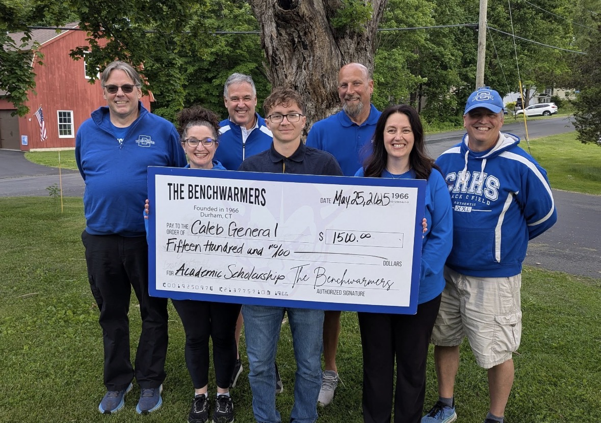

One of four annual awards recognizing Coginchaug student-athletes.

Recognizing student-athletes
Benchwarmer Scholarships
An annual tradition
Supporting the next chapter
Every year, the Coginchaug Benchwarmers award scholarships to graduating student-athletes from Coginchaug Regional High School. These scholarships recognize students who have worked hard academically, represented their teams with dedication, and contributed positively to the school community.
The awards extend the Benchwarmers' mission beyond uniforms, equipment, transportation, and facilities. They help student-athletes take their next step after high school and celebrate the character, teamwork, and perseverance developed through athletics.
One of four annual awards recognizing Coginchaug student-athletes.
One of four annual awards recognizing Coginchaug student-athletes.
One of four annual awards recognizing Coginchaug student-athletes.
Winners archive
Celebrating our recipients
Past scholarship recipients are listed newest first and grouped by the award they received.
20268 recipients
- Bill Cahill Athlete of the Year
- Coach Wally Camp Award
- Stan Salva Award
20259 recipients
- Bill Cahill Athlete of the Year
- Coach Wally Camp Award
- Stan Salva Award
- Judy Camp Award
202414 recipients
- Bill Cahill Athlete of the Year
- Coach Wally Camp Award
- Stan Salva Award
- Judy Camp Award
202310 recipients
- Bill Cahill Athlete of the Year
- Coach Wally Camp Award
- Stan Salva Award
- Judy Camp Award
20228 recipients
- Bill Cahill Athlete of the Year
- Coach Wally Camp Award
- Stan Salva Award
Help support future graduates
Community support helps the Benchwarmers continue recognizing Coginchaug student-athletes every year.